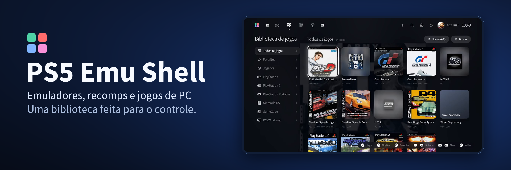

Encontre o jogo pela capa
O launcher busca capas para suas ROMs e exibe a arte do jogo na tela inicial. Separe sagas em coleções, marque favoritos e troque de console com L1 e R1.

Launcher de jogos
Da biblioteca ao jogo, pelo controle.
Adicione pastas de ROMs e os executáveis de recomps e jogos de PC. O launcher reúne tudo em uma biblioteca com capas, filtros por sistema e favoritos para você escolher o que jogar pelo controle.
Abra a biblioteca no sofá, passe pelas capas e filtre por console. O launcher reúne jogos de 19 sistemas, recompilações nativas e jogos de PC. Ao escolher um título, ele chama o emulador ou executável que você configurou.
O launcher busca capas para suas ROMs e exibe a arte do jogo na tela inicial. Separe sagas em coleções, marque favoritos e troque de console com L1 e R1.
Navegue com Xbox, DualShock 4 ou DualSense por USB ou Bluetooth. Use o teclado virtual para buscar jogos e configure um atalho para voltar ao launcher durante a partida.
Conecte sua conta do RetroAchievements, veja o progresso de cada jogo em lista ou grade e sincronize o login com os emuladores compatíveis.
Na página da última versão, escolha o ZIP para Windows x64. Os emuladores, jogos e arquivos de BIOS têm requisitos próprios.
Abra a última versão no GitHub e extraia o ZIP para uma pasta de sua escolha.
Execute launcher\Iniciar.bat. Na configuração inicial, escolha os emuladores ou aponte para os executáveis que já usa.
Coloque suas ROMs na pasta do sistema correspondente ou adicione uma pasta de ROMs, um jogo de PC ou uma recompilação pelo menu +.
PlayStation, PS2, PSP, Nintendo DS e GameCube já vêm configurados. Adicione os demais, como SNES, Nintendo 64, PS3, PS4 e Xbox 360, em Configurações › Instalação.
O nome faz referência à interface. Os jogos são executados pelos emuladores e pelos executáveis que você configurar. A lista de sistemas inclui consoles até o PS4.
Use suas próprias cópias de jogos e os arquivos de BIOS ou firmware exigidos por cada emulador. O launcher pode baixar emuladores das fontes oficiais.
Copie a pasta base inteira, que reúne o launcher, as ROMs e os emuladores. Os caminhos relativos mantêm a biblioteca vinculada no outro computador.